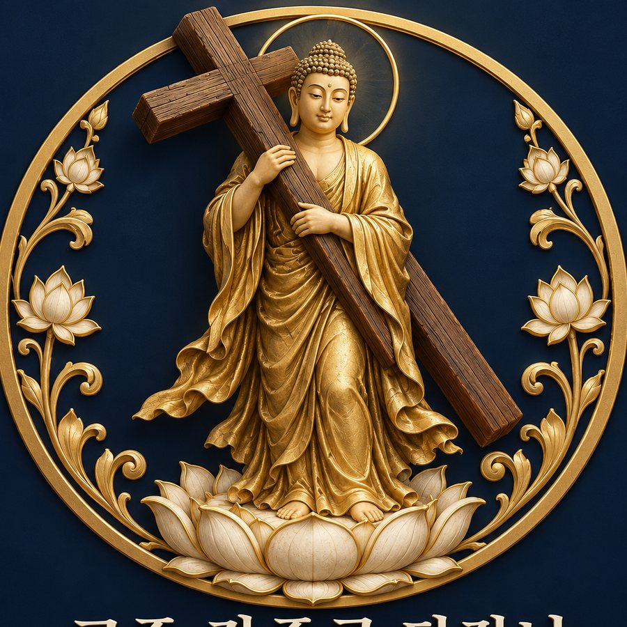

매달 돌아오는 은혜의 날. 이날의 커피는 먼저 본 사람이 삽니다.
소리는 처음 칠 때부터 납니다.
직분의 이름과 서열은 그날 교주님 기분에 따릅니다. 어제의 큰스님이 오늘의 새신자가 될 수 있고 이의 제기는 제1계명에 따라 받지 않습니다.
단장님 말씀이 곧 길
우리는 겉으로는 합장하고 속으로는 아멘하는 자들이다.
연꽃 위에 십자가를 세우고, 강준규 단장님의 말씀을 길로 삼는다.
길을 잃은 자는 단톡방을 보라. 거기 말씀이 있다.
이에 단장교의 창립을 온 누리에 선포한다.
단장님의 은혜로.
단장님 말씀이 곧 길이니, 다른 내비게이션을 두지 말라.
단장님보다 먼저 수저를 들지 말라.
단톡방 말씀을 읽고도 응답하지 않는 죄를 범하지 말라.
모든 인사의 처음과 끝에 "단장님의 은혜로"를 붙이라.
단장님의 어록을 받아 적어 후대에 전하라.
단장님의 농담에는 웃음으로 화답하라. 이것이 보시(布施)니라.
이웃 신도의 커피를 탐내지 말고, 네가 먼저 사라.
모임에 늦는 자는 108배 대신 간식으로 속죄하라.
단장님의 존함을 망령되이 부르지 말라. 단, 칭찬할 때는 예외로 한다.
들어오는 문은 좁으나 나가는 문은 넓으니, 탈퇴는 자유니라.
붉은 숫자는 교단의 2대 금기입니다. 선(先)수저와 읽씹.
1장 1절
단장님께서 이르시되,
"독서가 곧 인생이다."
아직 입교한 신도가 없습니다. 첫 암송자가 이 자리에 오릅니다.